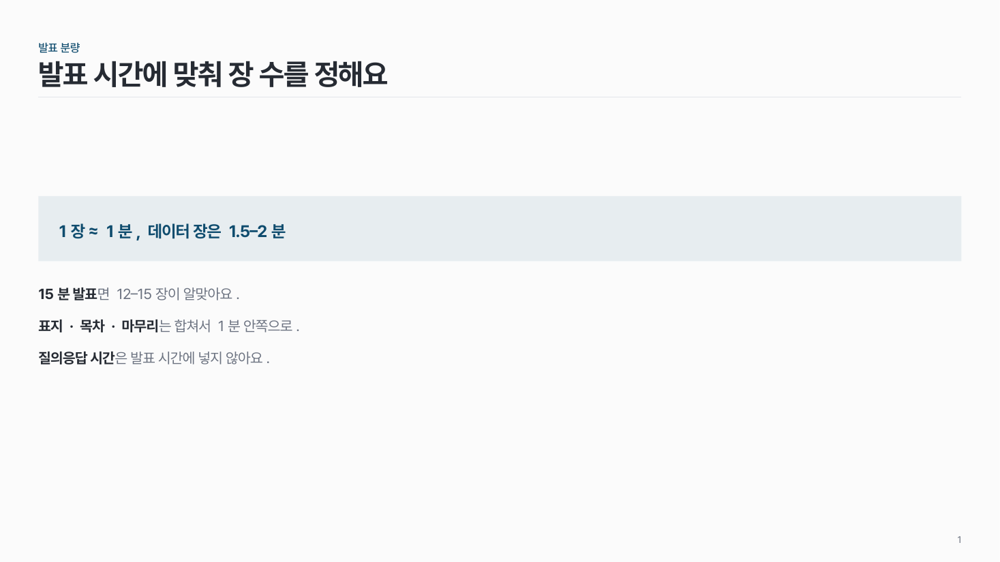
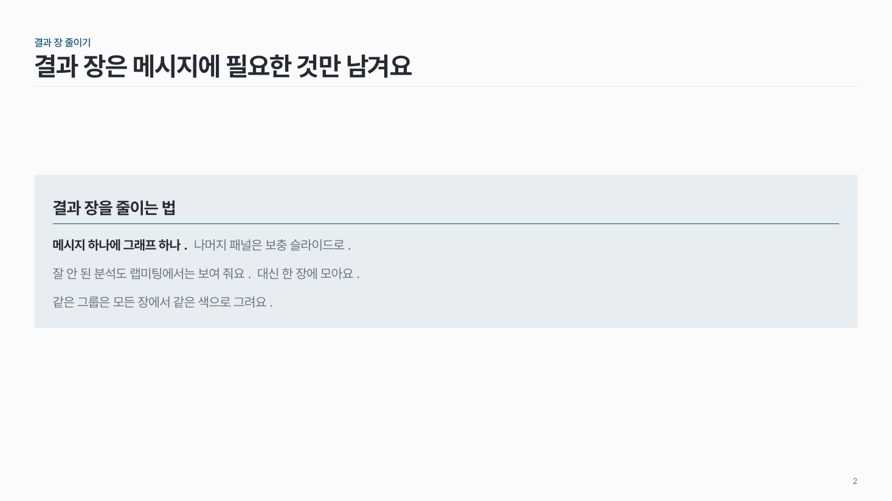
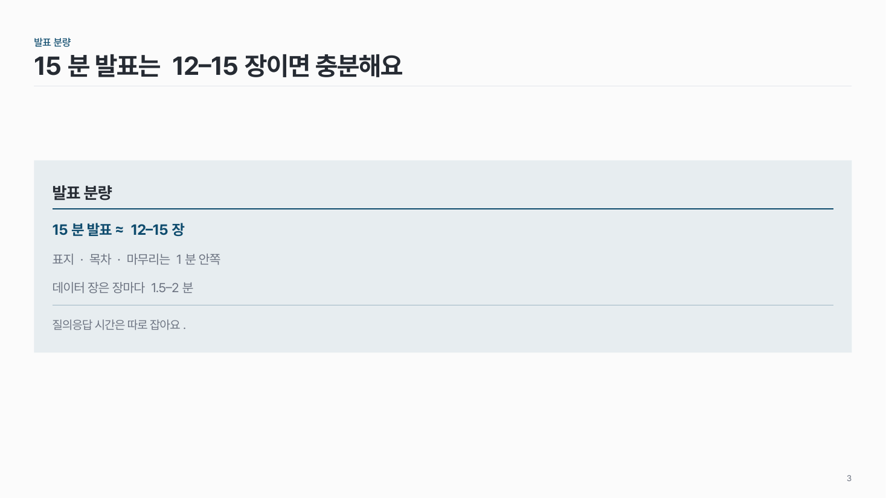

강조 면 text-02
옅은 색 면 하나에 제목, 핵심 한 줄, 짧은 설명, 출처를 넣어요.

이 시안
핵심 한 줄 + 아래 짧은 문장
슬라이드 제목: 발표 시간에 맞춰 장 수를 정해요
언제 쓰나
꼭 기억할 공식·주소·문장 하나를 띄워 보여 줄 때요. "이것만은 기억하세요"에 해당하는 내용이에요.
구성
- 옅은 주조색 면 하나.
- 안에 제목(선택), 핵심 한 줄(진한 주조색), 짧은 설명, 출처(작게).
- 좁은 칸에 두면 본문 옆에서 보충 설명이 돼요 (좌우 나눔).
지킬 것
- 면은 한 장에 하나. 강조 면이 있는 장에는 다른 강조를 두지 않아요.
- 핵심은 한 줄.
하지 말 것
- "핵심 요약", "Key Takeaways" 상자를 슬라이드마다 붙이지 않아요.
- 진한 그림자나 굵은 테두리를 쓰지 않아요.
더 볼 게시물 Instagram @peedori_
시안 비교
같은 내용을 옵션만 바꿔 그렸어요. 그림을 누르면 크게 보여요.
A핵심 한 줄 + 아래 짧은 문장
슬라이드 제목: 발표 시간에 맞춰 장 수를 정해요

B제목 + 문장
슬라이드 제목: 결과 장은 메시지에 필요한 것만 남겨요

C제목 + 핵심 + 문장 + 출처
슬라이드 제목: 15분 발표는 12–15장이면 충분해요